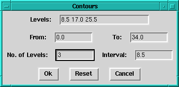

| This dialogue is used to overlay contours on the image. There are several ways in which the levels can be set: |
|  |
|
| Note that in cases 2 and 3, if either or both of the From and To fields are left as the default values (the data min and max), then contours will not be plotted at these levels, but will be fitted in between. Note also that contours accumulate unless explicitly reset. |